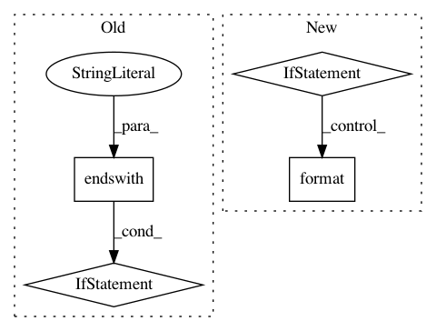

3828cd2c966355fb185ac9bdc7817888630c1152,perfkitbenchmarker/linux_packages/cudnn.py,,AptInstall,#Any#,58
Before Change
def AptInstall(vm):
dest_path = _CopyLib(vm)
if dest_path.endswith(".deb"):
vm.RemoteCommand("sudo dpkg -i %s" % dest_path, should_log=True)
else:
_Install(vm, dest_path)
def YumInstall(vm):
_Install(vm, _CopyLib(vm))
After Change
def AptInstall(vm):
Installs the cudnn package on the VM.
if FLAGS["cudnn"].present:
_Install(vm, _CopyLib(vm))
else:
if FLAGS.cuda_toolkit_version == "8.0":
cudnn_version = CUDNN_6
elif FLAGS.cuda_toolkit_version == "9.0":
cudnn_version = CUDNN_7
vm.RemoteCommand(
"sudo bash -c \"echo "deb http://developer.download.nvidia.com/compute/"
"machine-learning/repos/ubuntu1604/x86_64 /" > /etc/apt/sources.list.d/"
"nvidia-ml.list\"", should_log=True)
vm.RemoteCommand("sudo apt-get update", should_log=True)
vm.RemoteCommand("sudo apt-get install -y --no-install-recommends "
"{}".format(cudnn_version), should_log=True)
def YumInstall(vm):
_Install(vm, _CopyLib(vm))
In pattern: SUPERPATTERN
Frequency: 3
Non-data size: 4
Instances
Project Name: GoogleCloudPlatform/PerfKitBenchmarker
Commit Name: 3828cd2c966355fb185ac9bdc7817888630c1152
Time: 2018-08-23
Author: tohaowu@google.com
File Name: perfkitbenchmarker/linux_packages/cudnn.py
Class Name:
Method Name: AptInstall
Project Name: pantsbuild/pants
Commit Name: aea2747cda25271b788d670b8e65452b24bed4e0
Time: 2015-09-17
Author: john.sirois@gmail.com
File Name: src/python/pants/backend/android/tasks/unpack_libraries.py
Class Name: UnpackLibraries
Method Name: _unpack_artifacts
Project Name: IDSIA/sacred
Commit Name: 8530a78631fa7e3b5f66cd164e409d5762739beb
Time: 2015-02-19
Author: qwlouse@gmail.com
File Name: sacred/dependencies.py
Class Name: FileDependency
Method Name: create